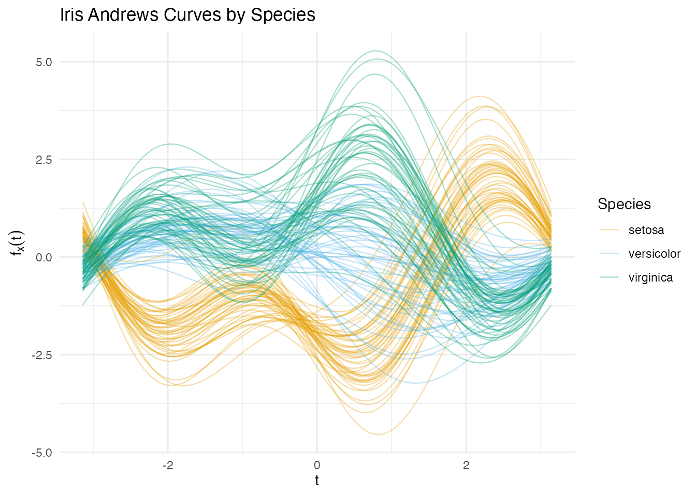
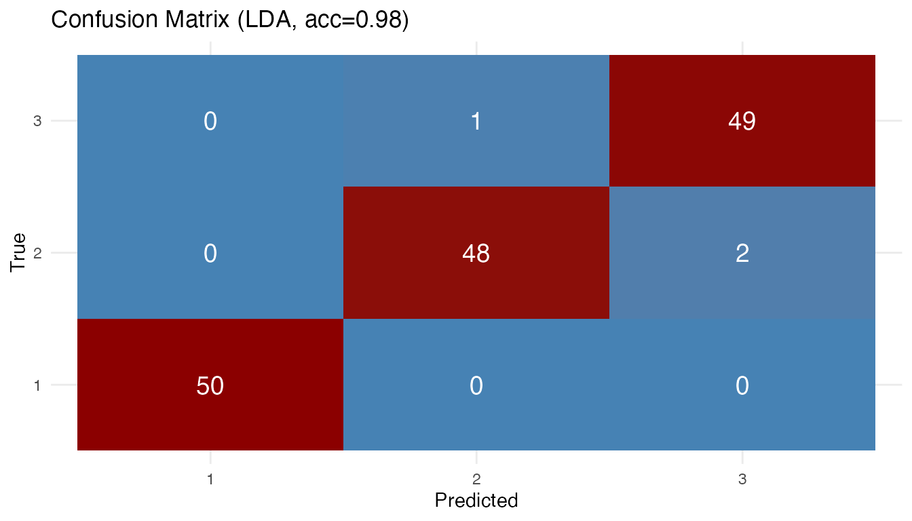
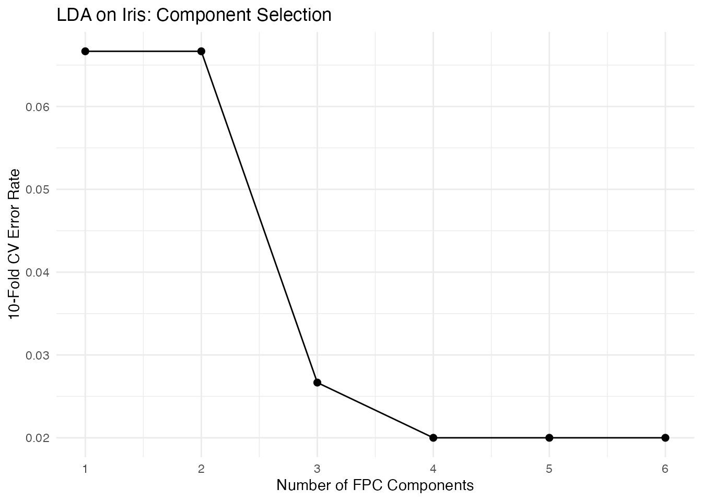

Supervised Classification of Functional Data
Source:vignettes/articles/functional-classification.Rmd
functional-classification.RmdIntroduction
Supervised classification assigns functional observations to discrete
groups. fdars provides five methods through a unified
fclassif() interface:
| Method | Description | Strengths |
|---|---|---|
| LDA | Linear discriminant analysis on FPC scores | Fast, interpretable |
| QDA | Quadratic discriminant analysis on FPC scores | Handles class-specific covariance |
| kNN | k-nearest neighbors in FPC space | Nonparametric, flexible |
| Kernel | Kernel classifier with functional bandwidth | Fully nonparametric |
| DD | Depth-vs-depth classification | Robust to outliers |
All methods support optional scalar covariates alongside functional predictors.
Iris as Functional Data
Instead of a toy simulation we use the classic iris dataset, transformed into functional data via the Andrews transformation. This maps each 4-dimensional observation to a curve on using a Fourier expansion — preserving Euclidean distances up to a constant factor.
The three species (setosa, versicolor, virginica) are the classes. Crucially, versicolor and virginica overlap substantially, making this a non-trivial classification task.
andrews_transform <- function(X, m = 200) {
if (is.data.frame(X)) X <- as.matrix(X)
n <- nrow(X)
p <- ncol(X)
t_grid <- seq(-pi, pi, length.out = m)
basis <- matrix(0, m, p)
basis[, 1] <- 1 / sqrt(2)
for (j in 2:p) {
k <- ceiling((j - 1) / 2)
if (j %% 2 == 0) {
basis[, j] <- sin(k * t_grid)
} else {
basis[, j] <- cos(k * t_grid)
}
}
fdata(X %*% t(basis), argvals = t_grid)
}
X_raw <- as.matrix(iris[, 1:4])
X <- scale(X_raw)
species <- iris$Species
y <- as.integer(species) # 1 = setosa, 2 = versicolor, 3 = virginica
fd <- andrews_transform(X)
n <- nrow(fd$data)
m <- ncol(fd$data)
df_plot <- data.frame(
t = rep(fd$argvals, each = n),
value = as.vector(fd$data),
Species = rep(species, m)
)
ggplot(df_plot, aes(x = t, y = value, group = interaction(Species, rep(1:n, m)),
color = Species)) +
geom_line(alpha = 0.35, linewidth = 0.4) +
labs(x = expression(t), y = expression(f[x](t)),
title = "Iris Andrews Curves by Species") +
scale_color_manual(values = c("setosa" = "#E69F00",
"versicolor" = "#56B4E9",
"virginica" = "#009E73"))
Setosa is well separated, but versicolor and virginica overlap — exactly the kind of challenge where classifier choice matters.
Comparing All Five Methods
methods <- c("lda", "qda", "knn", "kernel", "dd")
results <- list()
for (meth in methods) {
if (meth == "knn") {
results[[meth]] <- fclassif(fd, y, method = meth, ncomp = 3, k = 7)
} else {
results[[meth]] <- fclassif(fd, y, method = meth, ncomp = 3)
}
}
acc_df <- data.frame(
Method = toupper(methods),
Training_Accuracy = sapply(results, function(r) round(r$accuracy, 3))
)
print(acc_df)
#> Method Training_Accuracy
#> lda LDA 0.980
#> qda QDA 0.973
#> knn KNN 0.960
#> kernel KERNEL 0.960
#> dd DD 0.840Training accuracy alone can be misleading — QDA and kNN may overfit. Cross-validation gives a fairer picture (see below).
Confusion Matrix
The LDA confusion matrix reveals where errors concentrate:
plot(results[["lda"]])
Most errors are between versicolor and virginica, as expected from the overlapping Andrews curves.
Cross-Validation
fclassif.cv() evaluates out-of-sample error via k-fold
cross-validation:
set.seed(42)
cv_results <- list()
for (meth in methods) {
cv_results[[meth]] <- fclassif.cv(fd, y, method = meth,
ncomp = 3, nfold = 10, seed = 42)
}
cv_df <- data.frame(
Method = toupper(methods),
CV_Error = sapply(cv_results, function(r) round(r$error.rate, 3)),
CV_Accuracy = sapply(cv_results, function(r) round(1 - r$error.rate, 3))
)
print(cv_df)
#> Method CV_Error CV_Accuracy
#> lda LDA 0.027 0.973
#> qda QDA 0.033 0.967
#> knn KNN 0.040 0.960
#> kernel KERNEL 0.667 0.333
#> dd DD 0.667 0.333Choosing the Number of Components
Cross-validation can also help select the optimal number of FPC components. Too few loses discriminative information; too many introduces noise.
ncomp_range <- 1:6
cv_by_ncomp <- sapply(ncomp_range, function(k) {
fclassif.cv(fd, y, method = "lda", ncomp = k, nfold = 10, seed = 42)$error.rate
})
df_ncomp <- data.frame(ncomp = ncomp_range, error = cv_by_ncomp)
ggplot(df_ncomp, aes(x = ncomp, y = error)) +
geom_line() +
geom_point(size = 2) +
labs(x = "Number of FPC Components", y = "10-Fold CV Error Rate",
title = "LDA on Iris: Component Selection") +
scale_x_continuous(breaks = ncomp_range)
Method Selection Guidelines
- LDA: Good default when classes have similar covariance. Fast and interpretable. Works well on iris.
- QDA: Better when each class has its own covariance pattern. Needs enough observations per class to estimate class-specific covariances.
- kNN: Flexible nonparametric option. Tune via CV. Robust to non-linear boundaries.
- Kernel: Fully nonparametric — works directly in function space without dimension reduction. Can be slow on large datasets.
- DD: Robust to outliers. Uses depth-vs-depth plots for classification. Less sensitive to distributional assumptions.
See Also
-
vignette("articles/andrews-transformation")for more on the Andrews transform and its distance-preservation property -
vignette("articles/functional-regression")for scalar-on-function regression includingfunctional.logistic() -
vignette("articles/clustering")for unsupervised functional clustering -
vignette("articles/fpca")for functional PCA, which underlies LDA/QDA/kNN